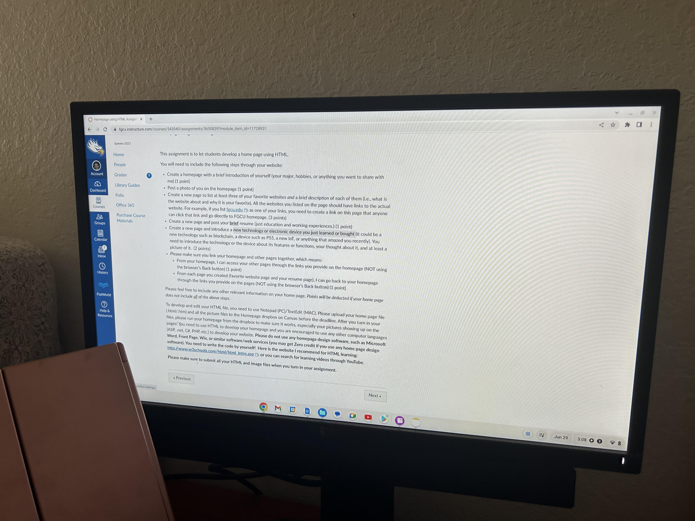

  <body>

         <B><center>
        <h1 style ="background-color:Fuchsia" >New Technology or Electronic Device just learned or bought </h1>
         
            </body>

        <B><I><center>
        <p style ="color:HotPink"> A new Technology I just bought is a moniter. I normally do all my work on my laptop, and there are sometimes where I need more space on my screen. I have been using this for about a week and it's the best. I like to have the directions on top moniter and do my work on the normal screen. This makes it much easier to look at the directions and do my work at the same time. More time saved and much easier. </p>

        height= "300" width = "150"

          <a href ="new-file.html"> Back to Main Page</a>
